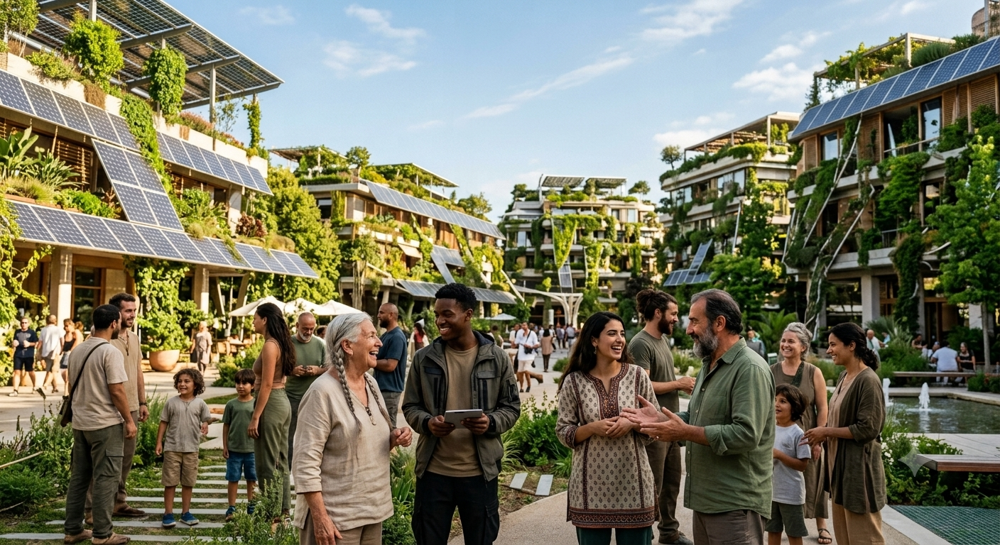
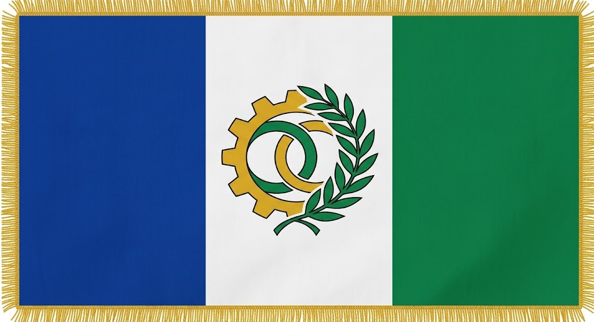
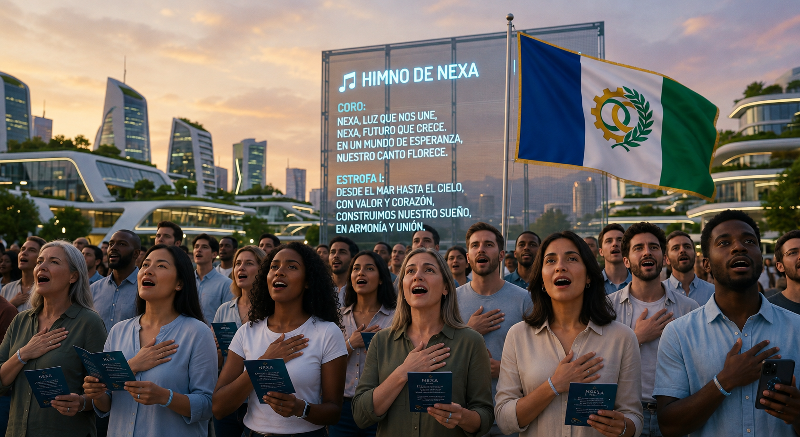
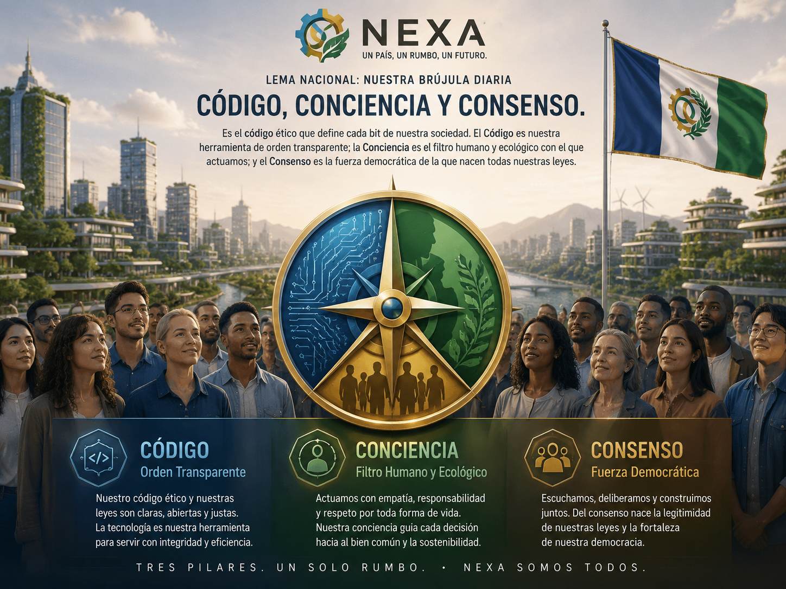

Nuestra Identidad: El Alma de Nexa Hecha Diseño
¡Bienvenido al futuro que siempre soñamos! Nexa no es solo una nación, es un hogar diseñado para el alma humana, donde la tecnología y la naturaleza se abrazan para cuidarte. Aquí tienes nuestra esencia, presentada con la calidez de nuestra gente y la fuerza de nuestro progreso.
La Bandera y el Escudo: Un Pacto de Color y Futuro
Nuestra bandera es la síntesis visual de nuestro gran propósito. Diseñada con tres franjas verticales perfectas, equilibra la tecnología con la pureza de la tierra:
- Azul Cobalto (Izquierda) · El Océano Digital: Representa la transparencia radical de nuestras instituciones y el flujo constante de datos que nos conecta a todos en una sola comunidad humana.
- Blanco Puro (Centro) · El Lienzo de la Verdad: Simboliza la paz, la neutralidad y la búsqueda inquebrantable de la honestidad colectiva.
- Verde Esmeralda (Derecha) ·El Latido Sostenible: El reflejo de nuestro respeto absoluto al planeta, la ecología y el desarrollo consciente.
En el corazón del blanco no encontrarás coronas, espadas ni leones. En su lugar, se erige un engranaje dorado entrelazado con una hoja de olivo. Es el símbolo supremo de Nexa: la tecnología más avanzada puesta al servicio de la paz, la sostenibilidad y la vida.


El Himno Nacional: "Ecos del Mañana"
Nuestro himno no le canta a batallas del pasado; es un manifiesto poético que se proyecta hacia el futuro. Es la voz de un pueblo que se organiza a través de la ciencia y la participación real.
Estrofa
Sobre el lienzo del azul marino,
se levanta una voz de igualdad,
con la ciencia trazamos camino,,
con el pueblo, la cruda verdad.
Coro
¡Nexa! Por la luz del progreso,
vota el alma, responde la red,
libertad en el justo proceso,
justicia que calma la sed.
Lema Nacional: Nuestra Brújula Diaria
Bienveni
